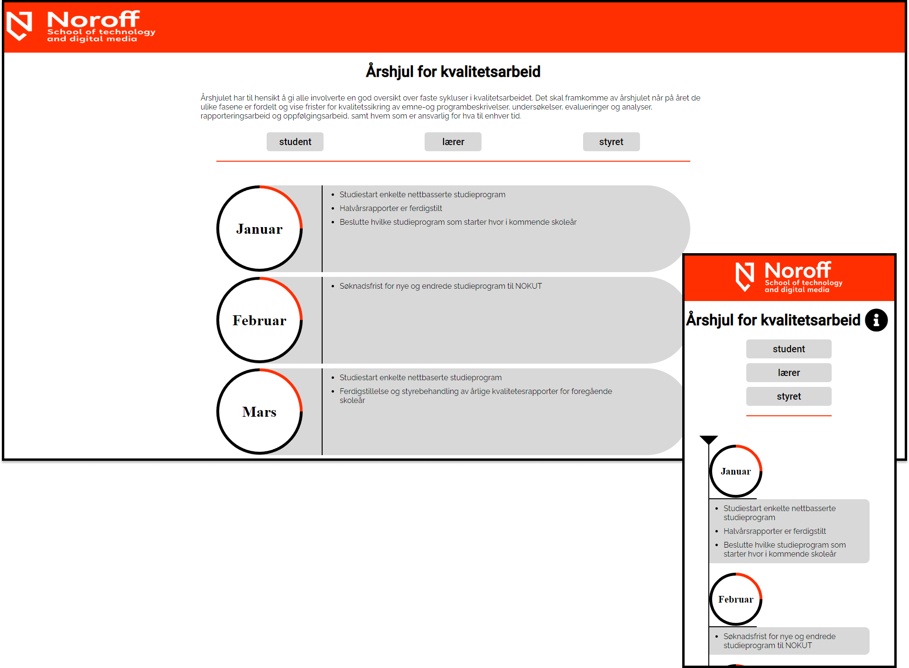

About
Noroff Quality was a group assignment given from my school. They needed
a rework of a page that showed all major events at the school. This
project was divided into two parts. First part was about design and user
testing, the other part was about implementing with use of a CMS. Header
and footer was not part of the assignment.
Requirments
- Well designed and appeals to target audience
- easy to use
- User testing and using the feedback given from it
- good use of the CMS
- Optimized and WCAG friendly
What I learned
- Divinding work and developing with others effectivly
- Design principles for easy use
- Create, observe and take into account user testing
- Javascript knowledge for sorting and optimization
- Efficient Back-end setup
Final Version

Checkout the complete final product here!
What I would do different
- Work on readability
-
Use more advanced CSS techniques for better responsivness across
screen sizes
-
Make it more compatible in case of large events needed to be added
Return to Front Page